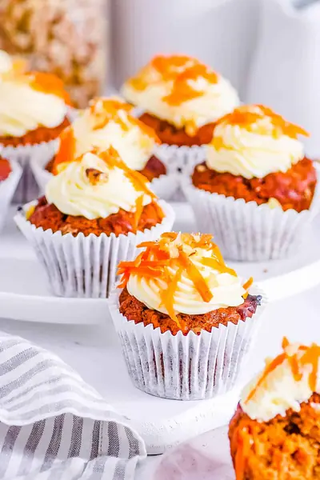

Vegan Carrot Cake Cupcakes

Ingredients
- 2 cups white whole wheat flour
- 2 tsp baking soda
- 2 tsp baking powder
- ½ tsp salt
- 2 tsp cinnamon
- 1¼ cups vegetable oil
- 1 cup coconut sugar
- 1 cup unsweetened applesauce
- 1 tsp vanilla extract
- 3 cups grated carrots
- 1 cup chopped walnuts
- ½ cup vegan butter
- 8 oz package vegan cream cheese
- 1 tsp vanilla extract
- 1 cup powdered sugar, sifted
- Grated carrots, shredded coconut, and chopped walnuts for topping
Steps
- Preheat oven to 350 degrees and line a muffin pan with cupcake liners.
- Whisk together the flour, baking soda, baking powder, salt, and cinnamon. Set aside.
- In a large bowl, beat together the vegetable oil and sugar until well combined. Add the applesauce and vanilla and mix until combined.
- Add the dry ingredients to the oil mixture and mix until smooth.
- Fold in the grated carrots and chopped walnuts.
- Fill each cupcake liner 2/3 full of batter. Bake in the preheated oven for 25 to 30 minutes, until a toothpick inserted in the center comes out clean.
- To make the icing, beat together the vegan butter, vegan cream cheese, and vanilla extract until smooth. Add the powdered sugar and beat until combined.
- When the cupcakes are cooled completely, pipe the icing on top and garnish with grated carrots, shredded coconut, and walnuts.
Recipe by Anjali Shah · The Picky Eater, from The Picky Eater. Saved here for personal use; the original has the full notes, tips and photos. Open original